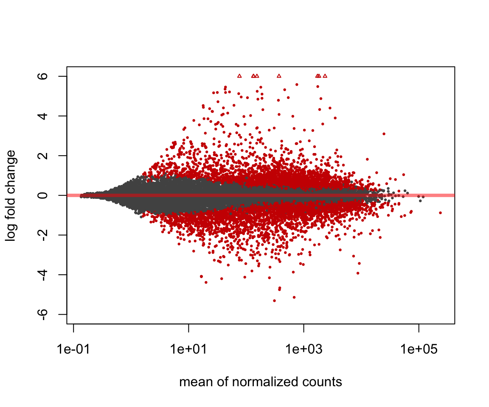

Class 6: RNA-seq Analysis part 1
Austin Gillen
2017-12-12
RNA-seq analysis in R
- Introduce matrices and matrix manipulation in R
- Build a DESeqDataSet and calculate differential gene expression
- Plot results and QC metrics
Before we get started: Installing Bioconductor packages
source("https://bioconductor.org/biocLite.R")
biocLite("DESeq2")
# Also install two packages from CRAN
install.packages(c("pheatmap","RColorBrewer"))
update_eda()
library(DESeq2)
library(pheatmap)
library(RColorBrewer)
library(tidyverse)
library(cowplot)
library(eda)Matrices in R are two dimensional objects that contain elements of one atomic type
Matrices can contain characters or logical values, but we’re really only interested in numeric matrices:
# Build 4x3 matrix with row-wise series of integers
M <- matrix(c(1:12),
nrow = 4,
byrow = TRUE)
M
#> [,1] [,2] [,3]
#> [1,] 1 2 3
#> [2,] 4 5 6
#> [3,] 7 8 9
#> [4,] 10 11 12Elements of a matrix can be accessed using column and row indices or names
To return the value in the first row, second column:
M[1,2]
#> [1] 2With named rows and columns:
# Assign column names
colnames(M) <- c("col1",
"col2",
"col3")
# Assign row names
row.names(M) <- c("row1",
"row2",
"row3",
"row4")
M["row1","col2"]
#> [1] 2Index ranges and character vectors of row/column names also work:
M[1:2,2:3]
#> col2 col3
#> row1 2 3
#> row2 5 6
M[c("row1","row2"),c("col2","col3")]
#> col2 col3
#> row1 2 3
#> row2 5 6As does negative selection:
# Exclude rows 1 and 4
M[-c(1,4),]
#> col1 col2 col3
#> row2 4 5 6
#> row3 7 8 9Full rows and columns can be extracted as well:
# print 1st row
M[1,]
#> col1 col2 col3
#> 1 2 3
# print 2nd column
M[,2]
#> row1 row2 row3 row4
#> 2 5 8 11
# print 2nd and 3rd rows
M[2:3,]
#> col1 col2 col3
#> row2 4 5 6
#> row3 7 8 9Mathematical operations can be performed on numeric matrices
For example, taking the base 2 logarithm of each value:
M_log <- log2(M)
M_log
#> col1 col2 col3
#> row1 0.000000 1.000000 1.584963
#> row2 2.000000 2.321928 2.584963
#> row3 2.807355 3.000000 3.169925
#> row4 3.321928 3.459432 3.584963Or normalizing all columns relative to an arbitrary reference column:
M_norm <- M/M[,1]
M_norm
#> col1 col2 col3
#> row1 1 2.000000 3.000000
#> row2 1 1.250000 1.500000
#> row3 1 1.142857 1.285714
#> row4 1 1.100000 1.200000Analyzing RNA-Seq Data
Simplified RNA sequencing analysis workflow (genome alignment)
| Step | Tools | Description |
|---|---|---|
| Align reads to genome | STAR, HISAT2 | Align reads to genomic sequence, retaining strand information if present |
| Assign reads to features | Subread, StringTie | Assign aligned reads to genes and/or transcripts |
| Calculate differential expression | DESeq2, edgeR, Ballgown | Fit count matrices to model to determine differential expression |
Simplified RNA sequencing analysis workflow (quasi-mapping)
| Step | Tools | Description |
|---|---|---|
| Estimate transcript abundance | Salmon / Kallisto | Estimate transcript abundance directly on transcriptome sequences |
| Calculate differential expression | DESeq2, edgeR, Ballgown | Fit count matrices to model to determine differential expression |
Inspect RNA-seq count and phenotype data from file that is included in eda package
# View first few rows of count matrix
head(drug_resistant_counts)
#> parent1 parent2 parent3 A_resistant1 A_resistant2 A_resistant3
#> DDX11L1 0 0 0 0 0 0
#> WASH7P 3 7 13 7 12 9
#> MIR6859-1 1 1 1 2 1 2
#> MIR1302-2 0 0 0 0 0 0
#> FAM138A 0 0 0 0 0 0
#> OR4F5 0 0 0 0 0 0
#> B_resistant1 B_resistant2 B_resistant3 C_resistant1 C_resistant2
#> DDX11L1 0 0 0 0 0
#> WASH7P 10 9 11 24 7
#> MIR6859-1 2 2 2 6 0
#> MIR1302-2 0 0 0 0 0
#> FAM138A 0 0 0 0 0
#> OR4F5 0 0 0 0 0
#> C_resistant3
#> DDX11L1 0
#> WASH7P 9
#> MIR6859-1 1
#> MIR1302-2 0
#> FAM138A 0
#> OR4F5 0
# View phenotype data
drug_resistant_coldata
#> drug
#> parent1 none
#> parent2 none
#> parent3 none
#> A_resistant1 A
#> A_resistant2 A
#> A_resistant3 A
#> B_resistant1 B
#> B_resistant2 B
#> B_resistant3 B
#> C_resistant1 C
#> C_resistant2 C
#> C_resistant3 CDESeq2 uses DESeqDataSets, a subset of the Bioconductor SummarizedExperiment object, to store data
SummarizedExperiment objects provide a structured, self-contained way to store phenotype, gene and assay data, along with analysis intermediates and parameters.

Build a DESeqDataSet from the drug_resistant data
# Create DESeqDataSet from drug_resistant data
dds <- DESeqDataSetFromMatrix(countData = drug_resistant_counts,
colData = drug_resistant_coldata,
design = ~drug)
# View DESeqDataSet
dds
#> class: DESeqDataSet
#> dim: 33121 12
#> metadata(1): version
#> assays(1): counts
#> rownames(33121): DDX11L1 WASH7P ... VAMP7-2 IL9R-2
#> rowData names(0):
#> colnames(12): parent1 parent2 ... C_resistant2 C_resistant3
#> colData names(1): drug
# View design
dds@design
#> ~drug
# View colData
colData(dds)
#> DataFrame with 12 rows and 1 column
#> drug
#> <factor>
#> parent1 none
#> parent2 none
#> parent3 none
#> A_resistant1 A
#> A_resistant2 A
#> ... ...
#> B_resistant2 B
#> B_resistant3 B
#> C_resistant1 C
#> C_resistant2 C
#> C_resistant3 C
# View counts
head(assay(dds))
#> parent1 parent2 parent3 A_resistant1 A_resistant2 A_resistant3
#> DDX11L1 0 0 0 0 0 0
#> WASH7P 3 7 13 7 12 9
#> MIR6859-1 1 1 1 2 1 2
#> MIR1302-2 0 0 0 0 0 0
#> FAM138A 0 0 0 0 0 0
#> OR4F5 0 0 0 0 0 0
#> B_resistant1 B_resistant2 B_resistant3 C_resistant1 C_resistant2
#> DDX11L1 0 0 0 0 0
#> WASH7P 10 9 11 24 7
#> MIR6859-1 2 2 2 6 0
#> MIR1302-2 0 0 0 0 0
#> FAM138A 0 0 0 0 0
#> OR4F5 0 0 0 0 0
#> C_resistant3
#> DDX11L1 0
#> WASH7P 9
#> MIR6859-1 1
#> MIR1302-2 0
#> FAM138A 0
#> OR4F5 0Filtering genes with little or no expression
DESeq2 performs internal filtering to remove genes with low expression, but explicitly filtering extreme cases beforehand can speed up processing.
nrow(dds)
#> [1] 33121
# remove genes with 0-1 total reads
dds <- dds[rowSums(counts(dds)) > 1,]
nrow(dds)
#> [1] 21178Stabilizing the variance across the mean for visualizing count data
Many analysis methods for multidimensional data rely on variance being consistent across mean values. Raw count data has the greatest variance at high mean values (largest raw values), while log2-transformed data has the greatest variance at low mean values (largest fold-changes). To get around this, DESeq2 provides two different functions - vst() and rlog() - that stabilize variance across the mean.
# rlog transform
rld <- rlog(dds,
blind = FALSE)Sample distances are useful to assess the overall similarity between samples
Sample distance plots are used to assess overall similarity between samples: which samples are similar to each other, which are different? We calculate the euclidean distance between samples using dist() on the rlog-transformed data to ensure roughly equal contributions from all genes.
# Transpose count matrix and calculate distances using dist()
sampleDists <- dist(t(assay(rld)))
# Convert distance dataframe to matrix
sampleDistMatrix <- as.matrix(sampleDists)
# Choose continuous palette from RColorBrewer
colors <- colorRampPalette(rev(brewer.pal(9, "Blues")))(255)
# Plot sample distance heatmap with pheatmap
pheatmap(sampleDistMatrix,
col = colors)
Principle Component Analysis (PCA) plots
Another method for visualizing relationships in multidimensional data is principle component analysis. PCA identifies clusters of variables (in this case, genes) that explain the majority of the variance present. PCA plots are x-y plots of the first two principle components; they spread the samples out in the two directions that explain most of the differences.
# Generate PCA plot with DESeq2 plotPCA() wrapper
plotPCA(rld, intgroup = "drug") +
scale_color_brewer(palette = "Set1")
Calculating differential expression
DESeq2 provides a wrapper function DESeq() that takes a DESeqDataSet and calculates differential expression. Progress through analysis steps are printed as the function runs.
# Run DESeq2
dds <- DESeq(dds)
#> estimating size factors
#> estimating dispersions
#> gene-wise dispersion estimates
#> mean-dispersion relationship
#> final dispersion estimates
#> fitting model and testingExtracting results after differential expression is calculated
DESeq2 results are extracted with the results() function. Specific sample-sample comparisons are specified with the contrast argument.
# Extract default results (No Drug vs. Drug A)
res <- results(dds)
# View results summary
summary(res)
#>
#> out of 21178 with nonzero total read count
#> adjusted p-value < 0.1
#> LFC > 0 (up) : 3165, 15%
#> LFC < 0 (down) : 3337, 16%
#> outliers [1] : 25, 0.12%
#> low counts [2] : 3696, 17%
#> (mean count < 2)
#> [1] see 'cooksCutoff' argument of ?results
#> [2] see 'independentFiltering' argument of ?results
# Extract results for No Drug vs. Drug C
res_none_C <- results(dds, contrast = c("drug", "none", "C"))
# Convert dataframe to tibble for use with tidyverse tools
res_tibble <- as.data.frame(res) %>%
tibble::rownames_to_column(var = "gene") %>%
as.tibble()MA-plots
MA plots - plots of mean expression (x-axis) vs. log2-fold change (y-axis) - are useful for visualizing the distribution of gene expression in your comparisons.
# Return results with moderated log2 fold-changes.
res_ma <- lfcShrink(dds, contrast=c("drug","none","A"), res=res)
# Plot MA
plotMA(res_ma, ylim = c(-6,6))
Plotting differential expression results
DESeq2 can plot normalized counts using the plotCounts() function.
# Plot differential expression
plotCounts(dds,
gene = "ESR1",
intgroup=c("drug"))
dds_plot <- plotCounts(dds,
gene = "ESR1",
intgroup=c("drug"),
returnData = TRUE)
# Clean up plot with ggplot2
ggplot(dds_plot, aes(x = drug, y = count, color = drug)) +
scale_y_log10() +
geom_point(cex = 3)
Plotting heatmaps of differentially expressed genes
The pheatmaps package can be used to plot differential gene expression across samples/replicates.
# extract the 20 most significantly differentially expressed genes
top_genes <- res_tibble %>% arrange(padj) %>% head(20)
# subset rlog matrix based on gene list
mat <- assay(rld)[ top_genes$gene, ]
# normalize expression to per-gene average
mat <- mat - rowMeans(mat)
# plot heatmap
pheatmap(mat)
Exercises
The exercises for today’s class are presented here, Here is a link to the raw text of these exercises
Quiz
Create an RMarkdown document and answer the questions from the Exercises section. Write your answers in the text, and print the final tibbles/plots that your code produced that gave you the answer. Submit your final document as “Quiz 5” by Friday at 10 PM.
Your submitted document must knit to HTML without errors. I.e., when you click the “Knit” button, the document should build and display and HTML page.